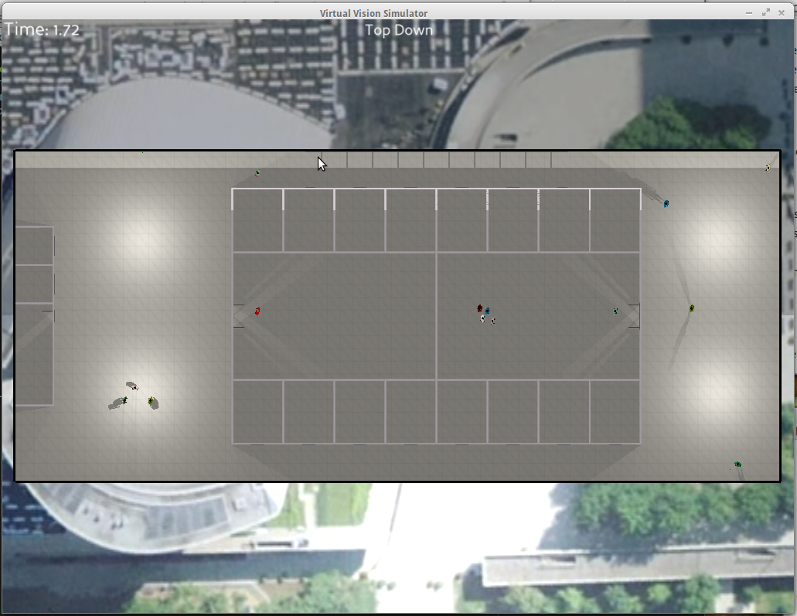
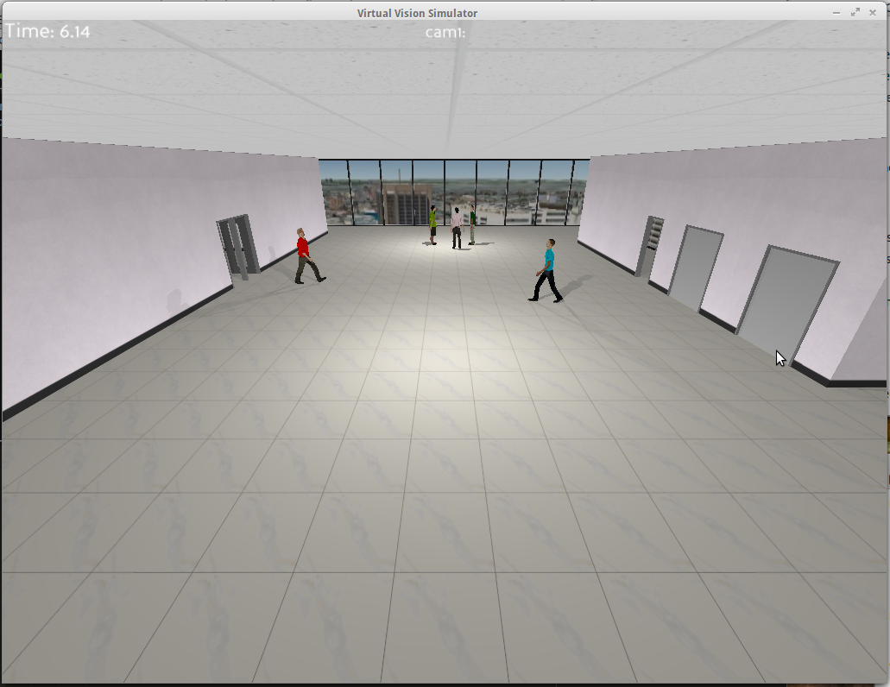
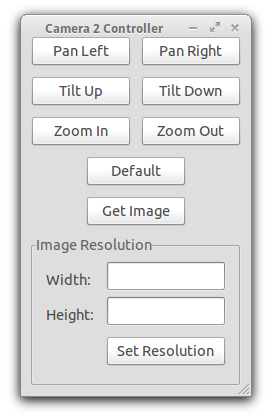

Getting Started Guide
First Run
Starting the Virtual Vision Simulator
- Open up a Terminal and change to the Virtual Vision Simulator directory. Here you will see four directories: config, dependencies, media and src.
- Now change to the src directory which contains three different applications.
- We want to run the Virtual Vision Simulator. This can be done by executingthe following command.
python 3D_Simulator.py -d ../config/sampleYou should now see a window showing a view of the Virtual Vision Simulator. The d flag is used to specify the location of the scenario configuration files. A sample scenario is provided in the config/sample directory.

- Press the left and right arrow keys on the keyboard to toggle between the different cameras. The sample scenario comes with three cameras. A top down view of the scene is also provided. 
- We will now move on to starting the sample client and connecting to the Virtual Vision Simulator.
Starting the sample client
- Use the left or right arrow keys to change to camera 2. The camera that is being displayed is shown at the top of the image.
- Open another Terminal window and change to the Virtual Vision Simulator directory.
- Now change to the src directory.
- Start a sample client by executing the following command:
python sample_client.pyYou should now see a window showing the sample clients interface.

- Try pressing some of the buttons to see what happens. NOTE: By default, the sample client tries to connect to an active PTZ camera.
- Open up a third Terminal window
- Now change to the src directory
- Start a sample client that connects to a static camera by executing the following command
python sample_client.py --static
- A new window will open up with the same interface as before, however pressing the pan/til/zoom buttons will have no effect on the camera. You can only get an image or set the resolution.
Connecting to a Virtual Vision Simulator that is running on a different machine
- Follow the instructions above to start a Virtual Vision Simulator.
- Press the i button on your keyboard.
- You should now see an overlay that shows information about the ip address and port the Virtual Vision Simulator is using as well as information about the cameras that are available. NOTE: Your computer may have multiple IP addresses, so the right one might not be displayed.
- Open up another Terminal window and change to the Virtual Vision Simulator directory.
- Now change to the src directory.
- Start a sample client by executing the following command:
python sample_client.py -a 192.168.1.100 -p 9099The a flag is used to specify the ip address of the simulation server, while the p flag is used to specify the port.